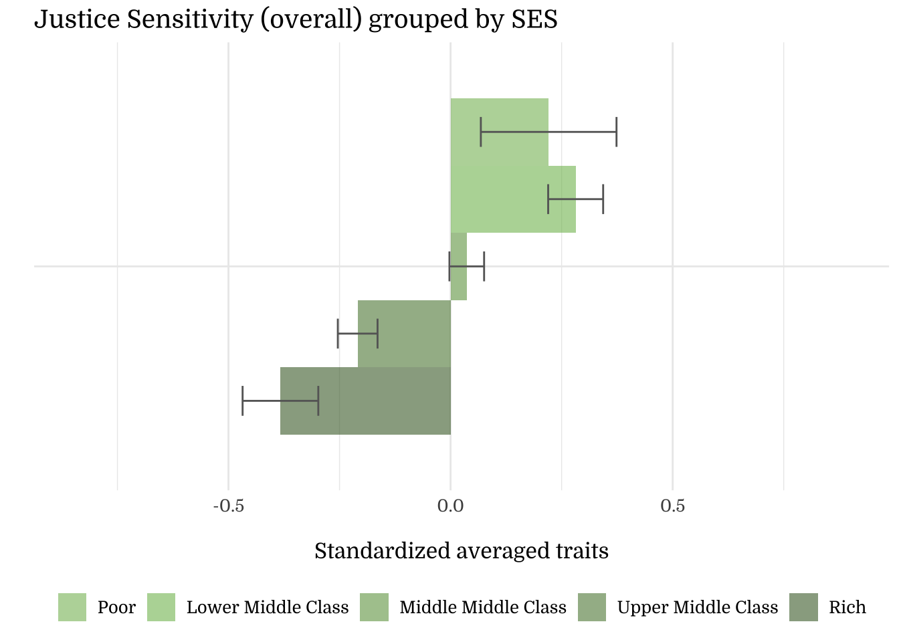
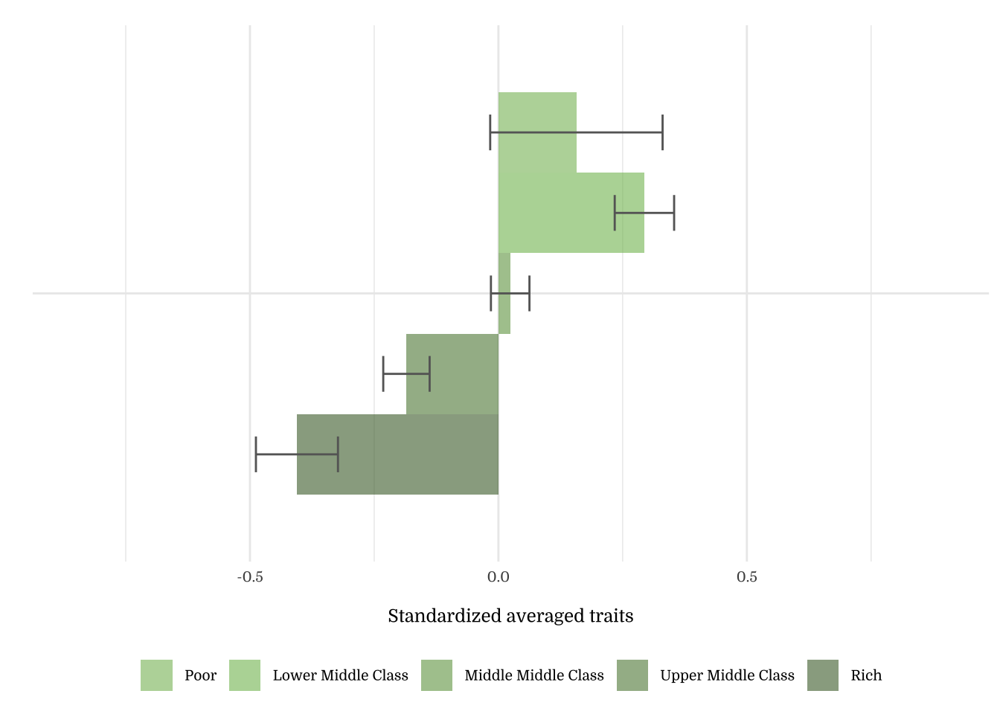
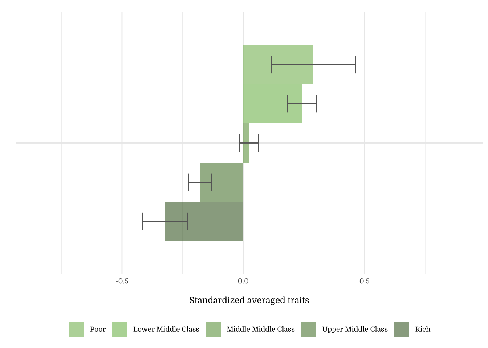
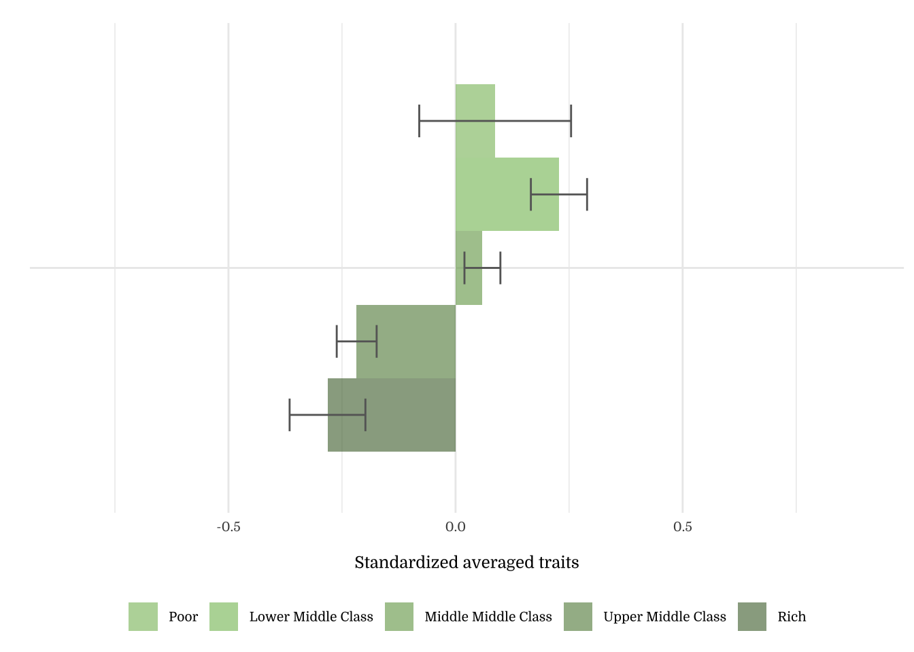
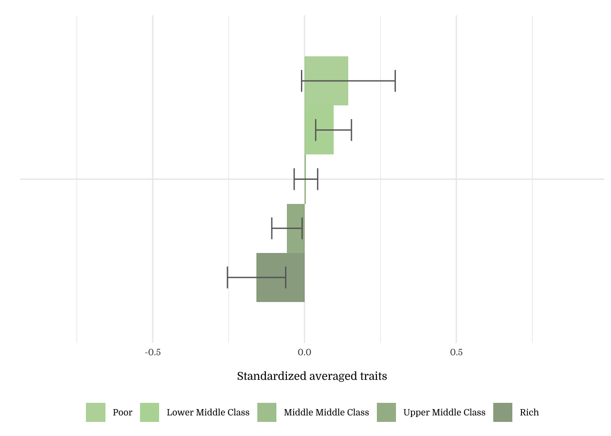
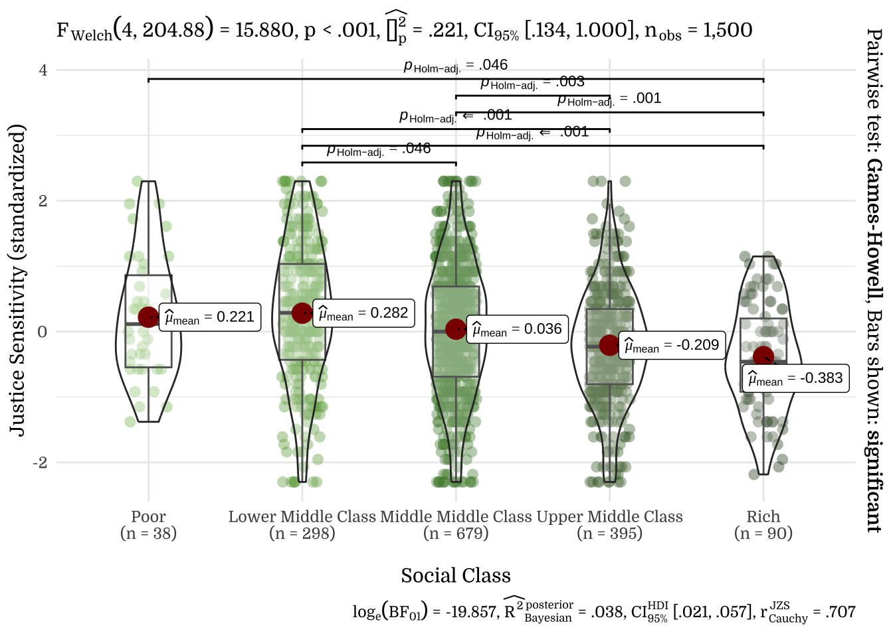
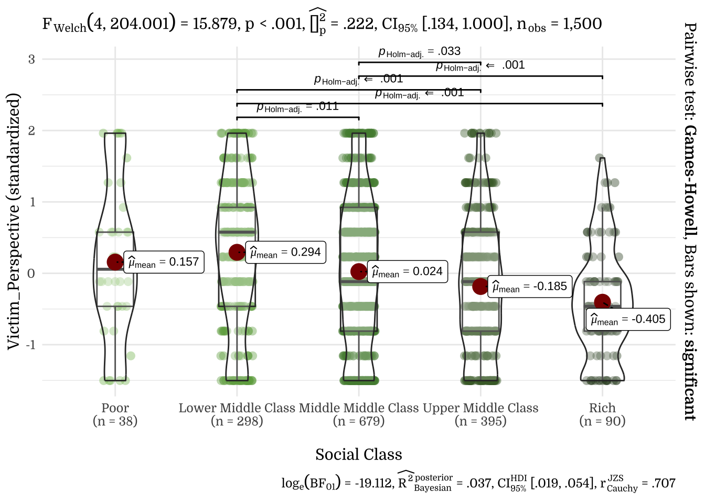
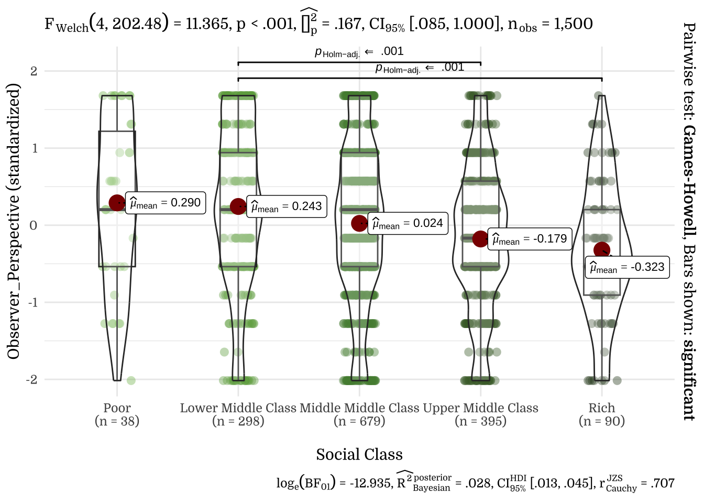
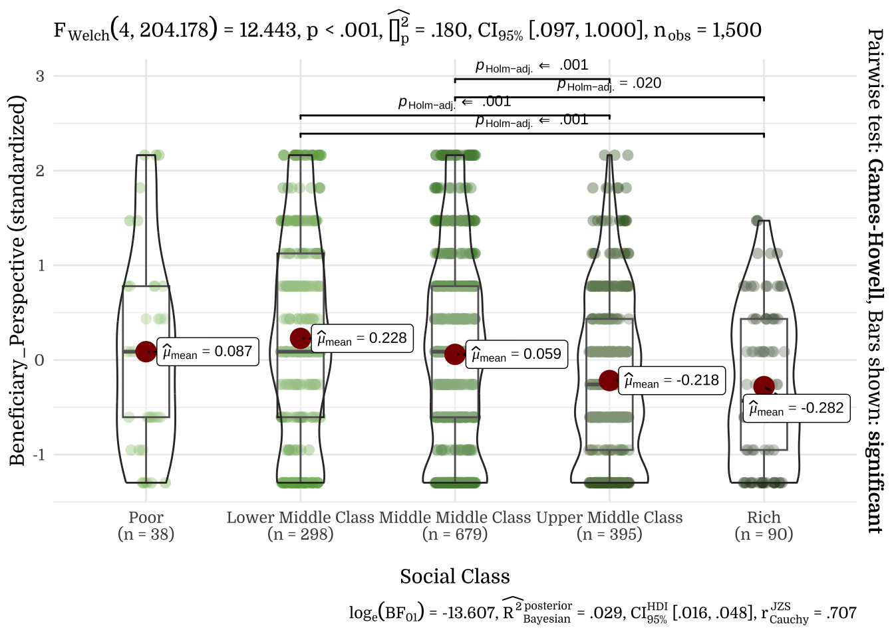
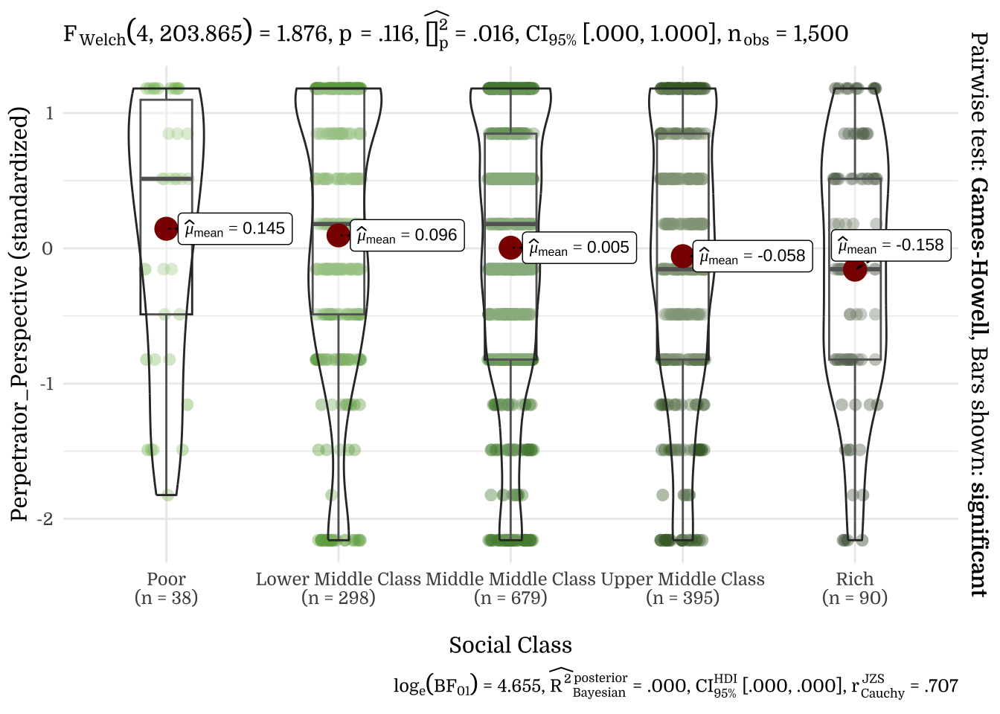

Justice Sensitivity [2016]
A Politico-Psychological Analysis
1 Study Characteristics
1.1 Items: Justice Sensitivity
1.2 Sample
N=1500
To conduct a exploratory and a confirmatory large surveys during the general election, we hired a professional survey firm (SSI, a US-based market research company that recruits participants from a panel of 7,139,027 American citizens; more information can be found at www.surveysampling.com (now https://www.dynata.com/) to recruit a nationally representative sample of 1,500 Americans (50.7% women) who completed study materials during the general election from August 16-September 9, 2016. (Information about sampling and exclusion criteria is included in the Supplement). The age distribution was as follows: 18-24 (12.9%), 25-34 (17.6%), 35-44 (17.5%), 45-54 (19.5%), 55-65 (15.6%) and older than 65 (16.9%). The ethnic breakdown was: White/European American (82.5%), Black/African American (7.7%), Latino (5.9%) and “Other” (4.0%). Concerning religion, 67.6% identified as Christian, 17.1% as religiously affiliated but not Christian, and 15.3% as Atheist/Agnostic. With respect to education 35.1% indicated “high school only or lower,” 31.4 % indicated “some college,” and 33.6% indicated having received a “Bachelor” or “Graduate” degree. 2424 participants were directed to the survey, 1885 of which finished the survey (attrition rate 22%).
We followed recommendations to minimize the problem of careless responding in online studies. Specifically, we employed 10 random attention questions and time controls to check for data quality. There were 385 participants who failed more than one attention check or finished the survey in under ~22 minutes and were therefore excluded from the sample. For the 1500 participants who successfully finished the survey, completion time was 67 minutes on average (MD: 51min).
2 Descriptives
2.1 Means, SD, Range, & SE
| vars | n | mean | sd | median | min | max | range | se | |
|---|---|---|---|---|---|---|---|---|---|
| Victim_Perspective_mean | 1 | 1500 | 2.17 | 1.44 | 2.0 | 0 | 5 | 5 | 0.04 |
| Observer_Perspective_mean | 2 | 1500 | 2.73 | 1.35 | 3.0 | 0 | 5 | 5 | 0.03 |
| Beneficiary_Perspective_mean | 3 | 1500 | 1.87 | 1.44 | 2.0 | 0 | 5 | 5 | 0.04 |
| Perpetrator_Perspective_mean | 4 | 1500 | 3.23 | 1.50 | 3.5 | 0 | 5 | 5 | 0.04 |
| JS | 5 | 1500 | 2.50 | 1.09 | 2.5 | 0 | 5 | 5 | 0.03 |
| n | mean | sd | median | min | max | range | se | |
|---|---|---|---|---|---|---|---|---|
| Victim_Perspective1 | 1500 | 2.11 | 1.58 | 2.0 | 0 | 5 | 5 | 0.04 |
| Victim_Perspective2 | 1500 | 2.22 | 1.60 | 2.0 | 0 | 5 | 5 | 0.04 |
| Observer_Perspective1 | 1500 | 2.99 | 1.48 | 3.0 | 0 | 5 | 5 | 0.04 |
| Observer_Perspective2 | 1500 | 2.46 | 1.55 | 2.5 | 0 | 5 | 5 | 0.04 |
| Beneficiary_Perspective1 | 1500 | 1.91 | 1.55 | 2.0 | 0 | 5 | 5 | 0.04 |
| Beneficiary_Perspective2 | 1500 | 1.84 | 1.51 | 2.0 | 0 | 5 | 5 | 0.04 |
| Perpetrator_Perspective1 | 1500 | 3.20 | 1.59 | 3.0 | 0 | 5 | 5 | 0.04 |
| Perpetrator_Perspective2 | 1500 | 3.26 | 1.60 | 3.0 | 0 | 5 | 5 | 0.04 |
| JS | 1500 | 2.50 | 1.09 | 2.5 | 0 | 5 | 5 | 0.03 |
| Victim_Perspective_mean | 1500 | 2.17 | 1.44 | 2.0 | 0 | 5 | 5 | 0.04 |
| Observer_Perspective_mean | 1500 | 2.73 | 1.35 | 3.0 | 0 | 5 | 5 | 0.03 |
| Beneficiary_Perspective_mean | 1500 | 1.87 | 1.44 | 2.0 | 0 | 5 | 5 | 0.04 |
| Perpetrator_Perspective_mean | 1500 | 3.23 | 1.50 | 3.5 | 0 | 5 | 5 | 0.04 |
2.2 Response Distribution
Figure 1.1: Proportion of each facet of Justice Sensitivity at item level
Figure 1.2: Proportion of each facet of Justice Sensitivity at item level
Figure 1.3: Proportion of each facet of Justice Sensitivity at item level
Figure 1.4: Proportion of each facet of Justice Sensitivity at item level
2.3 Correlations
2.3.1 Correlation Plots


2.3.2 PIDF
2.3.3 Correlation Matrix
3 Demographics
3.2 Gender
Figure 3.1: Justice Sensitivity Facets, as grouped by Gender
Figure 3.2: Justice Sensitivity Facets, as grouped by Gender
Figure 3.4: Justice Sensitivity Facets, as grouped by Gender

Figure 3.5: Justice Sensitivity Facets, as grouped by Gender
| Gender | N | Mean | SD |
|---|---|---|---|
| Female | 760 | 0.23 | 0.94 |
| Male | 740 | -0.24 | 1.00 |
| Gender | N | Mean | SD |
|---|---|---|---|
| Female | 760 | 0.16 | 0.99 |
| Male | 740 | -0.17 | 0.99 |
| Gender | N | Mean | SD |
|---|---|---|---|
| Female | 760 | 0.23 | 0.96 |
| Male | 740 | -0.23 | 0.99 |
| Gender | N | Mean | SD |
|---|---|---|---|
| Female | 760 | 0.19 | 1.01 |
| Male | 740 | -0.19 | 0.95 |
| Gender | N | Mean | SD |
|---|---|---|---|
| Female | 760 | 0.12 | 0.97 |
| Male | 740 | -0.13 | 1.01 |
3.3 Age
| Age | N | Mean | SD |
|---|---|---|---|
| 18-24 years | 193 | 0.28 | 1.08 |
| 25-34 years | 264 | 0.36 | 0.90 |
| 35-44 years | 263 | 0.11 | 1.02 |
| 45-54 years | 292 | -0.03 | 1.01 |
| 55-64 years | 234 | -0.18 | 0.88 |
| 65+ | 254 | -0.50 | 0.86 |
| Age | N | Mean | SD |
|---|---|---|---|
| 18-24 years | 193 | 0.30 | 0.94 |
| 25-34 years | 264 | 0.42 | 0.94 |
| 35-44 years | 263 | 0.13 | 1.02 |
| 45-54 years | 292 | -0.04 | 1.00 |
| 55-64 years | 234 | -0.24 | 0.97 |
| 65+ | 254 | -0.53 | 0.79 |
| Age | N | Mean | SD |
|---|---|---|---|
| 18-24 years | 193 | 0.24 | 1.06 |
| 25-34 years | 264 | 0.35 | 0.85 |
| 35-44 years | 263 | 0.11 | 1.01 |
| 45-54 years | 292 | -0.08 | 1.02 |
| 55-64 years | 234 | -0.14 | 0.94 |
| 65+ | 254 | -0.44 | 0.91 |
| Age | N | Mean | SD |
|---|---|---|---|
| 18-24 years | 193 | 0.37 | 1.06 |
| 25-34 years | 264 | 0.33 | 0.99 |
| 35-44 years | 263 | 0.11 | 1.03 |
| 45-54 years | 292 | -0.08 | 0.99 |
| 55-64 years | 234 | -0.22 | 0.88 |
| 65+ | 254 | -0.45 | 0.79 |
| Age | N | Mean | SD |
|---|---|---|---|
| 18-24 years | 193 | -0.03 | 1.00 |
| 25-34 years | 264 | -0.01 | 0.98 |
| 35-44 years | 263 | -0.01 | 1.04 |
| 45-54 years | 292 | 0.10 | 1.01 |
| 55-64 years | 234 | 0.05 | 0.94 |
| 65+ | 254 | -0.12 | 1.02 |
3.4 Education
| Education | N | Mean | SD |
|---|---|---|---|
| Less than High School | 51 | 0.40 | 1.21 |
| High School | 475 | 0.08 | 1.04 |
| Some College | 471 | 0.09 | 1.00 |
| Bachelor | 310 | -0.22 | 0.92 |
| Graduate | 193 | -0.17 | 0.87 |
| Education | N | Mean | SD |
|---|---|---|---|
| Less than High School | 51 | 0.43 | 1.17 |
| High School | 475 | 0.12 | 1.04 |
| Some College | 471 | 0.01 | 0.99 |
| Bachelor | 310 | -0.17 | 0.92 |
| Graduate | 193 | -0.15 | 0.93 |
| Education | N | Mean | SD |
|---|---|---|---|
| Less than High School | 51 | 0.43 | 1.02 |
| High School | 475 | 0.06 | 1.06 |
| Some College | 471 | 0.07 | 0.98 |
| Bachelor | 310 | -0.17 | 0.96 |
| Graduate | 193 | -0.19 | 0.90 |
| Education | N | Mean | SD |
|---|---|---|---|
| Less than High School | 51 | 0.22 | 1.13 |
| High School | 475 | 0.11 | 1.05 |
| Some College | 471 | 0.09 | 1.03 |
| Bachelor | 310 | -0.22 | 0.88 |
| Graduate | 193 | -0.18 | 0.87 |
| Education | N | Mean | SD |
|---|---|---|---|
| Less than High School | 51 | 0.14 | 1.07 |
| High School | 475 | -0.04 | 1.03 |
| Some College | 471 | 0.10 | 0.99 |
| Bachelor | 310 | -0.10 | 1.00 |
| Graduate | 193 | -0.02 | 0.94 |
3.5 Income Levels

| Income Levels | N | Mean | SD |
|---|---|---|---|
| Less than $15,000 | 178 | 0.23 | 1.05 |
| $15,000-$24,999 | 180 | 0.15 | 1.02 |
| $25,000-$34,999 | 176 | 0.04 | 1.00 |
| $35,000-$49,999 | 227 | 0.09 | 0.99 |
| $50,000-$74,999 | 292 | 0.05 | 1.00 |
| $75,000-$99,999 | 192 | -0.05 | 1.00 |
| $100,000-$149,999 | 160 | -0.32 | 0.79 |
| $150,000 + | 95 | -0.50 | 0.92 |
| Income Levels | N | Mean | SD |
|---|---|---|---|
| Less than $15,000 | 178 | 0.23 | 1.04 |
| $15,000-$24,999 | 180 | 0.14 | 1.02 |
| $25,000-$34,999 | 176 | 0.05 | 0.99 |
| $35,000-$49,999 | 227 | 0.08 | 1.01 |
| $50,000-$74,999 | 292 | 0.06 | 0.99 |
| $75,000-$99,999 | 192 | -0.03 | 1.01 |
| $100,000-$149,999 | 160 | -0.29 | 0.87 |
| $150,000 + | 95 | -0.61 | 0.76 |
| Income Levels | N | Mean | SD |
|---|---|---|---|
| Less than $15,000 | 178 | 0.19 | 1.07 |
| $15,000-$24,999 | 180 | 0.12 | 1.03 |
| $25,000-$34,999 | 176 | 0.08 | 1.00 |
| $35,000-$49,999 | 227 | 0.05 | 0.96 |
| $50,000-$74,999 | 292 | 0.03 | 0.97 |
| $75,000-$99,999 | 192 | -0.05 | 1.04 |
| $100,000-$149,999 | 160 | -0.26 | 0.86 |
| $150,000 + | 95 | -0.42 | 0.95 |
| Income Levels | N | Mean | SD |
|---|---|---|---|
| Less than $15,000 | 178 | 0.17 | 1.04 |
| $15,000-$24,999 | 180 | 0.14 | 1.03 |
| $25,000-$34,999 | 176 | 0.03 | 1.06 |
| $35,000-$49,999 | 227 | 0.05 | 1.01 |
| $50,000-$74,999 | 292 | 0.05 | 1.01 |
| $75,000-$99,999 | 192 | -0.04 | 0.97 |
| $100,000-$149,999 | 160 | -0.29 | 0.85 |
| $150,000 + | 95 | -0.33 | 0.86 |
| Income Levels | N | Mean | SD |
|---|---|---|---|
| Less than $15,000 | 178 | 0.11 | 0.98 |
| $15,000-$24,999 | 180 | 0.04 | 1.04 |
| $25,000-$34,999 | 176 | -0.04 | 0.99 |
| $35,000-$49,999 | 227 | 0.08 | 0.97 |
| $50,000-$74,999 | 292 | 0.03 | 0.99 |
| $75,000-$99,999 | 192 | -0.04 | 1.02 |
| $100,000-$149,999 | 160 | -0.14 | 0.95 |
| $150,000 + | 95 | -0.16 | 1.07 |
3.6 Ethnicity

Note on the Okabe-Ito color palette The Okabe-Ito color palette (seen above) is a set of colorblind-friendly categorical colors available in R. We are using this palette for graphs with non-ordered variables (e.g., groups, categories) for accessibility.


| Ethnicity | N | Mean | SD |
|---|---|---|---|
| Caucasian/European origin | 1237 | -0.04 | 1.00 |
| Black/African American | 115 | 0.17 | 0.95 |
| Latino | 88 | 0.19 | 1.00 |
| Asian/Pacific Islander | 29 | 0.17 | 0.99 |
| Native American | 13 | 0.14 | 1.40 |
| Other | 18 | 0.18 | 0.95 |
| Ethnicity | N | Mean | SD |
|---|---|---|---|
| Caucasian/European origin | 1237 | -0.03 | 0.99 |
| Black/African American | 115 | 0.09 | 1.06 |
| Latino | 88 | 0.25 | 0.99 |
| Asian/Pacific Islander | 29 | 0.22 | 0.91 |
| Native American | 13 | 0.39 | 1.07 |
| Other | 18 | -0.16 | 0.93 |
| Ethnicity | N | Mean | SD |
|---|---|---|---|
| Caucasian/European origin | 1237 | -0.05 | 1.00 |
| Black/African American | 115 | 0.23 | 0.97 |
| Latino | 88 | 0.28 | 0.97 |
| Asian/Pacific Islander | 29 | 0.15 | 0.96 |
| Native American | 13 | 0.23 | 1.25 |
| Other | 18 | 0.24 | 0.97 |
| Ethnicity | N | Mean | SD |
|---|---|---|---|
| Caucasian/European origin | 1237 | -0.03 | 0.99 |
| Black/African American | 115 | 0.08 | 0.99 |
| Latino | 88 | 0.24 | 1.06 |
| Asian/Pacific Islander | 29 | 0.29 | 1.07 |
| Native American | 13 | 0.01 | 1.33 |
| Other | 18 | -0.07 | 1.04 |
| Ethnicity | N | Mean | SD |
|---|---|---|---|
| Caucasian/European origin | 1237 | 0.00 | 1.00 |
| Black/African American | 115 | 0.12 | 1.03 |
| Latino | 88 | -0.16 | 0.95 |
| Asian/Pacific Islander | 29 | -0.13 | 0.92 |
| Native American | 13 | -0.18 | 1.33 |
| Other | 18 | 0.51 | 0.81 |
3.7 Occupation

| Occupation | N | Mean | SD |
|---|---|---|---|
| Employed | 768 | -0.01 | 0.96 |
| Retired | 268 | -0.40 | 0.84 |
| Unemployed | 146 | 0.24 | 1.09 |
| Parent | 104 | 0.28 | 1.07 |
| Disabled | 98 | 0.17 | 0.98 |
| Student | 85 | 0.39 | 1.15 |
| Full-time caregiver | 31 | 0.10 | 1.00 |
| Occupation | N | Mean | SD |
|---|---|---|---|
| Employed | 768 | 0.02 | 0.97 |
| Retired | 268 | -0.48 | 0.85 |
| Unemployed | 146 | 0.25 | 1.08 |
| Parent | 104 | 0.29 | 1.07 |
| Disabled | 98 | 0.15 | 1.06 |
| Student | 85 | 0.37 | 0.92 |
| Full-time caregiver | 31 | 0.06 | 0.92 |
| Occupation | N | Mean | SD |
|---|---|---|---|
| Employed | 768 | -0.02 | 0.97 |
| Retired | 268 | -0.35 | 0.91 |
| Unemployed | 146 | 0.27 | 0.97 |
| Parent | 104 | 0.21 | 1.11 |
| Disabled | 98 | 0.17 | 1.02 |
| Student | 85 | 0.34 | 1.12 |
| Full-time caregiver | 31 | 0.09 | 1.01 |
| Occupation | N | Mean | SD |
|---|---|---|---|
| Employed | 768 | -0.01 | 0.97 |
| Retired | 268 | -0.37 | 0.81 |
| Unemployed | 146 | 0.22 | 1.07 |
| Parent | 104 | 0.24 | 1.14 |
| Disabled | 98 | 0.06 | 1.06 |
| Student | 85 | 0.42 | 1.11 |
| Full-time caregiver | 31 | 0.28 | 0.91 |
| Occupation | N | Mean | SD |
|---|---|---|---|
| Employed | 768 | -0.02 | 0.99 |
| Retired | 268 | -0.04 | 0.96 |
| Unemployed | 146 | -0.01 | 1.13 |
| Parent | 104 | 0.12 | 0.95 |
| Disabled | 98 | 0.14 | 0.99 |
| Student | 85 | 0.06 | 1.02 |
| Full-time caregiver | 31 | -0.12 | 1.09 |
3.8 Area


| Area | N | Mean | SD |
|---|---|---|---|
| Urban | 955 | 0.03 | 0.98 |
| Rural | 545 | -0.05 | 1.03 |
| Area | N | Mean | SD |
|---|---|---|---|
| Urban | 955 | 0.03 | 0.99 |
| Rural | 545 | -0.04 | 1.02 |
| Area | N | Mean | SD |
|---|---|---|---|
| Urban | 955 | 0.06 | 0.99 |
| Rural | 545 | -0.10 | 1.01 |
| Area | N | Mean | SD |
|---|---|---|---|
| Urban | 955 | 0.00 | 1.00 |
| Rural | 545 | -0.01 | 1.01 |
| Area | N | Mean | SD |
|---|---|---|---|
| Urban | 955 | 0.01 | 0.98 |
| Rural | 545 | -0.01 | 1.03 |
3.9 Religious Affiliation

| Religious Affiliation | N | Mean | SD |
|---|---|---|---|
| Christian | 1014 | -0.05 | 0.95 |
| Muslim | 9 | 0.31 | 0.84 |
| Jewish | 52 | -0.32 | 0.89 |
| Atheist/Agnostic | 230 | 0.16 | 1.13 |
| Not listed, No religion | 195 | 0.15 | 1.08 |
| Religious Affiliation | N | Mean | SD |
|---|---|---|---|
| Christian | 1014 | -0.06 | 1.00 |
| Muslim | 9 | 0.35 | 0.98 |
| Jewish | 52 | -0.27 | 0.82 |
| Atheist/Agnostic | 230 | 0.12 | 1.00 |
| Not listed, No religion | 195 | 0.23 | 1.02 |
| Religious Affiliation | N | Mean | SD |
|---|---|---|---|
| Christian | 1014 | -0.06 | 0.97 |
| Muslim | 9 | -0.04 | 1.09 |
| Jewish | 52 | -0.26 | 1.02 |
| Atheist/Agnostic | 230 | 0.18 | 1.04 |
| Not listed, No religion | 195 | 0.18 | 1.05 |
| Religious Affiliation | N | Mean | SD |
|---|---|---|---|
| Christian | 1014 | -0.07 | 0.96 |
| Muslim | 9 | 0.16 | 1.23 |
| Jewish | 52 | -0.35 | 0.79 |
| Atheist/Agnostic | 230 | 0.20 | 1.09 |
| Not listed, No religion | 195 | 0.21 | 1.05 |
| Religious Affiliation | N | Mean | SD |
|---|---|---|---|
| Christian | 1014 | 0.04 | 0.97 |
| Muslim | 9 | 0.44 | 0.88 |
| Jewish | 52 | -0.10 | 1.11 |
| Atheist/Agnostic | 230 | -0.01 | 1.06 |
| Not listed, No religion | 195 | -0.16 | 1.04 |
3.10 Section Summary
| Justice Sensitivity | Justice Sensitivity | |||||
| Predictors | Estimates | CI | p | Estimates | CI | p |
| (Intercept) | 3.35 | 2.91 – 3.78 | <.001 | 3.34 | 2.98 – 3.70 | <.001 |
| SES F [Middle Middle Class] |
-0.09 | -0.38 – 0.19 | .524 | |||
| SES F [Poor] | -0.15 | -0.61 – 0.31 | .528 | |||
| SES F [Rich] | -0.02 | -0.69 – 0.66 | .964 | |||
| SES F [Upper Middle Class] |
-0.06 | -0.52 – 0.41 | .810 | |||
| AgeF25-34 years | 0.10 | -0.12 – 0.31 | .383 | |||
| AgeF35-44 years | -0.08 | -0.30 – 0.15 | .503 | |||
| AgeF45-54 years | -0.21 | -0.44 – 0.01 | .058 | |||
| AgeF55-64 years | -0.37 | -0.62 – -0.13 | .002 | |||
| AgeF [65+] | -0.53 | -0.80 – -0.26 | <.001 | |||
| SexF [Male] | -0.38 | -0.50 – -0.26 | <.001 | -0.44 | -0.55 – -0.32 | <.001 |
| EduF [High-school] | -0.23 | -0.57 – 0.11 | .190 | -0.26 | -0.56 – 0.04 | .091 |
| EduF [Some college] | -0.22 | -0.57 – 0.12 | .202 | -0.31 | -0.61 – -0.01 | .045 |
| EduF [Bachelor] | -0.41 | -0.82 – 0.01 | .053 | -0.53 | -0.84 – -0.21 | .001 |
| EduF [Graduate] | -0.23 | -0.71 – 0.25 | .354 | -0.40 | -0.73 – -0.07 | .018 |
| IncF [$15,000-$24,999] | 0.06 | -0.22 – 0.34 | .668 | |||
| IncF [$25,000-$34,999] | -0.03 | -0.31 – 0.25 | .841 | |||
| IncF [$35,000-$49,999] | 0.02 | -0.31 – 0.35 | .910 | |||
| IncF [$50,000-$74,999] | -0.01 | -0.34 – 0.32 | .943 | |||
| IncF [$75,000-$99,999] | -0.02 | -0.36 – 0.33 | .916 | |||
| IncF [$100,000-$149,999] | -0.23 | -0.66 – 0.19 | .281 | |||
| IncF [$150,000 +] | -0.38 | -0.82 – 0.06 | .094 | |||
| EthF [Black/African American] |
0.01 | -0.19 – 0.21 | .915 | 0.08 | -0.12 – 0.28 | .446 |
| EthF [Latino] | -0.01 | -0.24 – 0.22 | .947 | 0.07 | -0.16 – 0.30 | .537 |
| EthF [Asian/Pacific Islander] |
0.07 | -0.32 – 0.46 | .719 | 0.09 | -0.30 – 0.49 | .639 |
| EthF [Native American] | 0.03 | -0.54 – 0.60 | .918 | 0.08 | -0.49 – 0.65 | .788 |
| EthF [Other] | 0.09 | -0.39 – 0.57 | .719 | 0.13 | -0.36 – 0.61 | .614 |
| OccF [Employed] | -0.09 | -0.38 – 0.20 | .549 | -0.27 | -0.51 – -0.03 | .028 |
| OccF [Unemployed] | -0.04 | -0.33 – 0.26 | .815 | -0.13 | -0.41 – 0.15 | .351 |
| OccF [Full-time caregiver] |
-0.27 | -0.72 – 0.17 | .229 | -0.38 | -0.82 – 0.05 | .081 |
| OccF [Retired] | -0.11 | -0.47 – 0.24 | .529 | -0.60 | -0.86 – -0.34 | <.001 |
| OccF [Parent] | -0.14 | -0.47 – 0.19 | .412 | -0.21 | -0.52 – 0.09 | .174 |
| OccF [Disabled] | 0.02 | -0.36 – 0.41 | .903 | -0.16 | -0.46 – 0.15 | .317 |
| AreaF [Rural] | -0.09 | -0.20 – 0.03 | .137 | -0.09 | -0.20 – 0.02 | .121 |
| RelF [Muslim] | 0.11 | -0.58 – 0.79 | .764 | 0.21 | -0.49 – 0.90 | .561 |
| RelF [Jewish] | -0.14 | -0.44 – 0.16 | .352 | -0.22 | -0.51 – 0.08 | .153 |
| RelF [Atheist/Agnostic] | 0.07 | -0.08 – 0.22 | .358 | 0.15 | -0.00 – 0.30 | .056 |
| RelF [Not listed, No religion] |
-0.03 | -0.20 – 0.13 | .703 | 0.05 | -0.12 – 0.21 | .581 |
| Observations | 1500 | 1500 | ||||
| R2 / R2 adjusted | .137 / .115 | .105 / .092 | ||||
| Political Orientation | Social Political Orientation | Economic Political Orientation | Composite Political Orientation | |||||||||
| Predictors | Estimates | CI | p | Estimates | CI | p | Estimates | CI | p | Estimates | CI | p |
| (Intercept) | 4.31 | 3.78 – 4.84 | <.001 | 3.77 | 3.19 – 4.34 | <.001 | 4.71 | 4.12 – 5.29 | <.001 | 4.26 | 3.75 – 4.77 | <.001 |
| Justice Sensitivity | -0.52 | -0.62 – -0.42 | <.001 | -0.51 | -0.62 – -0.40 | <.001 | -0.69 | -0.80 – -0.57 | <.001 | -0.57 | -0.67 – -0.47 | <.001 |
| Age | 0.15 | 0.08 – 0.22 | <.001 | 0.15 | 0.08 – 0.23 | <.001 | 0.13 | 0.06 – 0.21 | .001 | 0.15 | 0.08 – 0.21 | <.001 |
| Income | 0.07 | 0.01 – 0.13 | .027 | -0.02 | -0.08 – 0.04 | .551 | 0.11 | 0.04 – 0.17 | .002 | 0.05 | -0.01 – 0.11 | .080 |
| Religiosity | 0.38 | 0.34 – 0.42 | <.001 | 0.50 | 0.46 – 0.54 | <.001 | 0.31 | 0.26 – 0.35 | <.001 | 0.40 | 0.36 – 0.43 | <.001 |
| Education | -0.16 | -0.27 – -0.05 | .005 | -0.20 | -0.32 – -0.08 | .001 | -0.01 | -0.13 – 0.12 | .909 | -0.12 | -0.23 – -0.02 | .025 |
| Observations | 1500 | 1500 | 1500 | 1500 | ||||||||
| R2 / R2 adjusted | .291 / .289 | .337 / .335 | .240 / .237 | .324 / .322 | ||||||||
4 Political Behavior
4.1 Political Orientation
Correlation with General Conservatism, Economic Conservatism, Social Conservatism

| Political Orientation | Social Political Orientation | Economic Political Orientation | Composite Political Orientation | |||||||||
| Predictors | Estimates | CI | p | Estimates | CI | p | Estimates | CI | p | Estimates | CI | p |
| (Intercept) | 5.31 | 5.19 – 5.42 | <.001 | 4.93 | 4.79 – 5.07 | <.001 | 5.48 | 5.35 – 5.60 | <.001 | 5.24 | 5.12 – 5.35 | <.001 |
| Justice Sensitivity | -0.67 | -0.79 – -0.55 | <.001 | -0.64 | -0.77 – -0.50 | <.001 | -0.88 | -1.00 – -0.75 | <.001 | -0.73 | -0.85 – -0.61 | <.001 |
| Observations | 1500 | 1500 | 1500 | 1500 | ||||||||
| R2 / R2 adjusted | .075 / .075 | .053 / .052 | .111 / .110 | .090 / .090 | ||||||||
| Political Orientation | Social Political Orientation | Economic Political Orientation | Composite Political Orientation | |||||||||
|---|---|---|---|---|---|---|---|---|---|---|---|---|
| Predictors | Estimates | CI | p | Estimates | CI | p | Estimates | CI | p | Estimates | CI | p |
| (Intercept) | 5.31 | 5.18 – 5.43 | <.001 | 4.93 | 4.79 – 5.07 | <.001 | 5.48 | 5.35 – 5.61 | <.001 | 5.24 | 5.12 – 5.36 | <.001 |
| Victim_Perspective | -0.42 | -0.54 – -0.30 | <.001 | -0.44 | -0.58 – -0.30 | <.001 | -0.62 | -0.75 – -0.49 | <.001 | -0.49 | -0.61 – -0.37 | <.001 |
| Observations | 1500 | 1500 | 1500 | 1500 | ||||||||
| R2 / R2 adjusted | .030 / .029 | .025 / .025 | .055 / .054 | .041 / .041 | ||||||||
| Political Orientation | Social Political Orientation | Economic Political Orientation | Composite Political Orientation | |||||||||
|---|---|---|---|---|---|---|---|---|---|---|---|---|
| Predictors | Estimates | CI | p | Estimates | CI | p | Estimates | CI | p | Estimates | CI | p |
| (Intercept) | 5.31 | 5.19 – 5.42 | <.001 | 4.93 | 4.79 – 5.06 | <.001 | 5.48 | 5.35 – 5.60 | <.001 | 5.24 | 5.12 – 5.35 | <.001 |
| Observer_Perspective | -0.76 | -0.87 – -0.64 | <.001 | -0.74 | -0.87 – -0.60 | <.001 | -0.93 | -1.05 – -0.81 | <.001 | -0.81 | -0.92 – -0.69 | <.001 |
| Observations | 1500 | 1500 | 1500 | 1500 | ||||||||
| R2 / R2 adjusted | .095 / .094 | .071 / .071 | .125 / .124 | .111 / .110 | ||||||||
| Political Orientation | Social Political Orientation | Economic Political Orientation | Composite Political Orientation | |||||||||
|---|---|---|---|---|---|---|---|---|---|---|---|---|
| Predictors | Estimates | CI | p | Estimates | CI | p | Estimates | CI | p | Estimates | CI | p |
| (Intercept) | 5.31 | 5.19 – 5.43 | <.001 | 4.93 | 4.79 – 5.07 | <.001 | 5.48 | 5.35 – 5.61 | <.001 | 5.24 | 5.12 – 5.36 | <.001 |
| Beneficiary_Perspective | -0.65 | -0.77 – -0.53 | <.001 | -0.62 | -0.76 – -0.49 | <.001 | -0.81 | -0.93 – -0.68 | <.001 | -0.69 | -0.81 – -0.58 | <.001 |
| Observations | 1500 | 1500 | 1500 | 1500 | ||||||||
| R2 / R2 adjusted | .071 / .071 | .051 / .050 | .094 / .093 | .082 / .082 | ||||||||
| Political Orientation | Social Political Orientation | Economic Political Orientation | Composite Political Orientation | |||||||||
|---|---|---|---|---|---|---|---|---|---|---|---|---|
| Predictors | Estimates | CI | p | Estimates | CI | p | Estimates | CI | p | Estimates | CI | p |
| (Intercept) | 5.31 | 5.18 – 5.43 | <.001 | 4.93 | 4.79 – 5.07 | <.001 | 5.48 | 5.35 – 5.61 | <.001 | 5.24 | 5.12 – 5.36 | <.001 |
| Perpetrator_Perspective | -0.23 | -0.36 – -0.11 | <.001 | -0.16 | -0.29 – -0.02 | .029 | -0.33 | -0.46 – -0.20 | <.001 | -0.24 | -0.36 – -0.12 | <.001 |
| Observations | 1500 | 1500 | 1500 | 1500 | ||||||||
| R2 / R2 adjusted | .009 / .009 | .003 / .002 | .016 / .015 | .010 / .009 | ||||||||
| Political Orientation | Social Political Orientation | Economic Political Orientation | Composite Political Orientation | |||||||||
| Predictors | Estimates | CI | p | Estimates | CI | p | Estimates | CI | p | Estimates | CI | p |
| (Intercept) | 4.31 | 3.78 – 4.84 | <.001 | 3.77 | 3.19 – 4.34 | <.001 | 4.71 | 4.12 – 5.29 | <.001 | 4.26 | 3.75 – 4.77 | <.001 |
| JS | -0.52 | -0.62 – -0.42 | <.001 | -0.51 | -0.62 – -0.40 | <.001 | -0.69 | -0.80 – -0.57 | <.001 | -0.57 | -0.67 – -0.47 | <.001 |
| Age | 0.15 | 0.08 – 0.22 | <.001 | 0.15 | 0.08 – 0.23 | <.001 | 0.13 | 0.06 – 0.21 | .001 | 0.15 | 0.08 – 0.21 | <.001 |
| Income | 0.07 | 0.01 – 0.13 | .027 | -0.02 | -0.08 – 0.04 | .551 | 0.11 | 0.04 – 0.17 | .002 | 0.05 | -0.01 – 0.11 | .080 |
| Religiosity | 0.38 | 0.34 – 0.42 | <.001 | 0.50 | 0.46 – 0.54 | <.001 | 0.31 | 0.26 – 0.35 | <.001 | 0.40 | 0.36 – 0.43 | <.001 |
| Education | -0.16 | -0.27 – -0.05 | .005 | -0.20 | -0.32 – -0.08 | .001 | -0.01 | -0.13 – 0.12 | .909 | -0.12 | -0.23 – -0.02 | .025 |
| Observations | 1500 | 1500 | 1500 | 1500 | ||||||||
| R2 / R2 adjusted | .291 / .289 | .337 / .335 | .240 / .237 | .324 / .322 | ||||||||
4.2 Religiosity
4.3 Candidate Preferences
| Candidate Preference | N | Mean | SD |
|---|---|---|---|
| Donald Trump | 444 | -0.29 | 0.94 |
| Hillary Clinton | 371 | 0.09 | 0.92 |
| Bernie Sanders | 362 | 0.52 | 0.95 |
| Ted Cruz | 122 | -0.35 | 1.02 |
| Jeb Bush | 83 | -0.32 | 0.79 |
| Gary Johnson | 68 | -0.24 | 1.04 |
| Rand Paul | 44 | -0.18 | 1.13 |
| Candidate Preference | N | Mean | SD |
|---|---|---|---|
| Donald Trump | 444 | -0.14 | 1.04 |
| Hillary Clinton | 371 | 0.06 | 0.98 |
| Bernie Sanders | 362 | 0.37 | 0.93 |
| Ted Cruz | 122 | -0.35 | 0.93 |
| Jeb Bush | 83 | -0.36 | 0.85 |
| Gary Johnson | 68 | -0.24 | 0.89 |
| Rand Paul | 44 | -0.18 | 1.01 |
| Candidate Preference | N | Mean | SD |
|---|---|---|---|
| Donald Trump | 444 | -0.28 | 0.97 |
| Hillary Clinton | 371 | 0.15 | 0.93 |
| Bernie Sanders | 362 | 0.48 | 0.91 |
| Ted Cruz | 122 | -0.42 | 0.99 |
| Jeb Bush | 83 | -0.46 | 0.80 |
| Gary Johnson | 68 | -0.17 | 0.97 |
| Rand Paul | 44 | -0.28 | 1.10 |
| Candidate Preference | N | Mean | SD |
|---|---|---|---|
| Donald Trump | 444 | -0.31 | 0.92 |
| Hillary Clinton | 371 | 0.10 | 0.96 |
| Bernie Sanders | 362 | 0.46 | 1.01 |
| Ted Cruz | 122 | -0.28 | 0.89 |
| Jeb Bush | 83 | -0.28 | 0.80 |
| Gary Johnson | 68 | -0.18 | 0.98 |
| Rand Paul | 44 | 0.03 | 1.10 |
| Candidate Preference | N | Mean | SD |
|---|---|---|---|
| Donald Trump | 444 | -0.17 | 1.03 |
| Hillary Clinton | 371 | -0.02 | 0.97 |
| Bernie Sanders | 362 | 0.27 | 0.91 |
| Ted Cruz | 122 | -0.04 | 1.07 |
| Jeb Bush | 83 | 0.11 | 0.88 |
| Gary Johnson | 68 | -0.15 | 1.06 |
| Rand Paul | 44 | -0.12 | 1.08 |
| Candidate Preference | N | Mean | SD |
|---|---|---|---|
| Donald Trump | 444 | 2.18 | 1.02 |
| Hillary Clinton | 371 | 2.60 | 1.00 |
| Bernie Sanders | 362 | 3.06 | 1.03 |
| Ted Cruz | 122 | 2.11 | 1.11 |
| Jeb Bush | 83 | 2.16 | 0.86 |
| Gary Johnson | 68 | 2.24 | 1.13 |
| Rand Paul | 44 | 2.31 | 1.23 |
| Candidate Preference | N | Mean | SD |
|---|---|---|---|
| Donald Trump | 444 | 1.97 | 1.50 |
| Hillary Clinton | 371 | 2.25 | 1.41 |
| Bernie Sanders | 362 | 2.70 | 1.34 |
| Ted Cruz | 122 | 1.66 | 1.34 |
| Jeb Bush | 83 | 1.65 | 1.23 |
| Gary Johnson | 68 | 1.82 | 1.28 |
| Rand Paul | 44 | 1.91 | 1.45 |
| Candidate Preference | N | Mean | SD |
|---|---|---|---|
| Donald Trump | 444 | 2.35 | 1.32 |
| Hillary Clinton | 371 | 2.94 | 1.26 |
| Bernie Sanders | 362 | 3.38 | 1.23 |
| Ted Cruz | 122 | 2.16 | 1.34 |
| Jeb Bush | 83 | 2.11 | 1.09 |
| Gary Johnson | 68 | 2.50 | 1.31 |
| Rand Paul | 44 | 2.35 | 1.48 |
| Candidate Preference | N | Mean | SD |
|---|---|---|---|
| Donald Trump | 444 | 1.43 | 1.33 |
| Hillary Clinton | 371 | 2.02 | 1.39 |
| Bernie Sanders | 362 | 2.54 | 1.47 |
| Ted Cruz | 122 | 1.48 | 1.29 |
| Jeb Bush | 83 | 1.46 | 1.16 |
| Gary Johnson | 68 | 1.62 | 1.42 |
| Rand Paul | 44 | 1.92 | 1.59 |
| Candidate Preference | N | Mean | SD |
|---|---|---|---|
| Donald Trump | 444 | 2.98 | 1.55 |
| Hillary Clinton | 371 | 3.20 | 1.45 |
| Bernie Sanders | 362 | 3.63 | 1.36 |
| Ted Cruz | 122 | 3.17 | 1.59 |
| Jeb Bush | 83 | 3.40 | 1.32 |
| Gary Johnson | 68 | 3.01 | 1.59 |
| Rand Paul | 44 | 3.05 | 1.62 |
4.4 Party Preferences


| Party Preference | N | Mean | SD |
|---|---|---|---|
| Democratic Party | 560 | 0.28 | 0.95 |
| Republican Party | 508 | -0.28 | 0.91 |
| Libertarian Party | 100 | -0.18 | 1.06 |
| Green Party | 40 | 0.89 | 0.71 |
| Tea Party | 68 | -0.64 | 0.95 |
| Constitution Party | 14 | 0.09 | 1.07 |
| None | 120 | -0.09 | 1.01 |
| Don't know | 90 | 0.26 | 1.02 |
| Party Preference | N | Mean | SD |
|---|---|---|---|
| Democratic Party | 560 | 0.20 | 0.97 |
| Republican Party | 508 | -0.22 | 0.97 |
| Libertarian Party | 100 | -0.19 | 0.99 |
| Green Party | 40 | 0.50 | 0.95 |
| Tea Party | 68 | -0.47 | 0.89 |
| Constitution Party | 14 | 0.01 | 0.82 |
| None | 120 | 0.07 | 1.02 |
| Don't know | 90 | 0.27 | 1.03 |
| Party Preference | N | Mean | SD |
|---|---|---|---|
| Democratic Party | 560 | 0.31 | 0.93 |
| Republican Party | 508 | -0.32 | 0.93 |
| Libertarian Party | 100 | -0.11 | 1.04 |
| Green Party | 40 | 0.90 | 0.64 |
| Tea Party | 68 | -0.63 | 0.95 |
| Constitution Party | 14 | 0.26 | 1.13 |
| None | 120 | -0.07 | 1.03 |
| Don't know | 90 | 0.13 | 0.96 |
| Party Preference | N | Mean | SD |
|---|---|---|---|
| Democratic Party | 560 | 0.24 | 1.00 |
| Republican Party | 508 | -0.24 | 0.90 |
| Libertarian Party | 100 | -0.14 | 1.01 |
| Green Party | 40 | 0.67 | 1.01 |
| Tea Party | 68 | -0.66 | 0.82 |
| Constitution Party | 14 | -0.16 | 0.96 |
| None | 120 | -0.06 | 1.01 |
| Don't know | 90 | 0.30 | 1.02 |
| Party Preference | N | Mean | SD |
|---|---|---|---|
| Democratic Party | 560 | 0.09 | 0.96 |
| Republican Party | 508 | -0.08 | 1.00 |
| Libertarian Party | 100 | -0.09 | 1.05 |
| Green Party | 40 | 0.66 | 0.68 |
| Tea Party | 68 | -0.21 | 1.15 |
| Constitution Party | 14 | 0.18 | 0.95 |
| None | 120 | -0.20 | 1.07 |
| Don't know | 90 | 0.09 | 0.97 |
| Party Preference | N | Mean | SD |
|---|---|---|---|
| Democratic Party | 560 | 2.80 | 1.03 |
| Republican Party | 508 | 2.19 | 0.99 |
| Libertarian Party | 100 | 2.31 | 1.15 |
| Green Party | 40 | 3.47 | 0.77 |
| Tea Party | 68 | 1.80 | 1.03 |
| Constitution Party | 14 | 2.60 | 1.16 |
| None | 120 | 2.41 | 1.10 |
| Don't know | 90 | 2.78 | 1.11 |
| Party Preference | N | Mean | SD |
|---|---|---|---|
| Democratic Party | 560 | 2.46 | 1.40 |
| Republican Party | 508 | 1.85 | 1.40 |
| Libertarian Party | 100 | 1.89 | 1.42 |
| Green Party | 40 | 2.89 | 1.37 |
| Tea Party | 68 | 1.49 | 1.29 |
| Constitution Party | 14 | 2.18 | 1.19 |
| None | 120 | 2.27 | 1.47 |
| Don't know | 90 | 2.56 | 1.48 |
| Party Preference | N | Mean | SD |
|---|---|---|---|
| Democratic Party | 560 | 3.15 | 1.26 |
| Republican Party | 508 | 2.29 | 1.25 |
| Libertarian Party | 100 | 2.58 | 1.41 |
| Green Party | 40 | 3.94 | 0.86 |
| Tea Party | 68 | 1.87 | 1.29 |
| Constitution Party | 14 | 3.07 | 1.53 |
| None | 120 | 2.63 | 1.40 |
| Don't know | 90 | 2.91 | 1.30 |
| Party Preference | N | Mean | SD |
|---|---|---|---|
| Democratic Party | 560 | 2.23 | 1.44 |
| Republican Party | 508 | 1.53 | 1.30 |
| Libertarian Party | 100 | 1.67 | 1.46 |
| Green Party | 40 | 2.84 | 1.46 |
| Tea Party | 68 | 0.93 | 1.19 |
| Constitution Party | 14 | 1.64 | 1.39 |
| None | 120 | 1.79 | 1.45 |
| Don't know | 90 | 2.31 | 1.48 |
| Party Preference | N | Mean | SD |
|---|---|---|---|
| Democratic Party | 560 | 3.37 | 1.43 |
| Republican Party | 508 | 3.11 | 1.49 |
| Libertarian Party | 100 | 3.09 | 1.58 |
| Green Party | 40 | 4.22 | 1.02 |
| Tea Party | 68 | 2.91 | 1.72 |
| Constitution Party | 14 | 3.50 | 1.43 |
| None | 120 | 2.92 | 1.60 |
| Don't know | 90 | 3.37 | 1.46 |
4.5 Voting
| 2016 [Trump vs. Clinton] | 2016 [Trump vs. Clinton] + Supporters | 2012 [Romney vs. Obama] | 2008 [McCain vs. Obama] | |||||||||
| Predictors | Log-Odds | CI | p | Log-Odds | CI | p | Log-Odds | CI | p | Log-Odds | CI | p |
| (Intercept) | .031 | -Inf – Inf | .618 | .012 | -Inf – Inf | .841 | .179 | -Inf – Inf | .003 | .217 | -Inf – Inf | <.001 |
| Justice Sensitivity | .602 | -Inf – Inf | <.001 | .595 | -Inf – Inf | <.001 | .696 | -Inf – Inf | <.001 | .651 | -Inf – Inf | <.001 |
| Observations | 1103 | 1148 | 1236 | 1206 | ||||||||
| R2 Tjur | .078 | .076 | .096 | .086 | ||||||||
4.6 Party Identity


| Donald Trump | Hilary Clinton | |
|---|---|---|
| Strong Republican | 282 | 7 |
| Republican | 166 | 24 |
| Leaning Republican | 58 | 7 |
| Independent | 17 | 16 |
| Leaning Democrat | 10 | 65 |
| Democrat | 27 | 129 |
| Strong Democrat | 4 | 323 |
| Donald Trump | Hilary Clinton | |
|---|---|---|
| Strong Republican | 282 | 7 |
| Republican | 166 | 24 |
| Leaning Republican | 58 | 7 |
| Independent | 17 | 16 |
| Leaning Democrat | 10 | 65 |
| Democrat | 27 | 129 |
| Strong Democrat | 4 | 323 |
| Donald Trump | Hilary Clinton | |
|---|---|---|
| Strong Republican | 282 | 7 |
| Republican | 166 | 24 |
| Leaning Republican | 58 | 7 |
| Independent | 17 | 16 |
| Leaning Democrat | 10 | 65 |
| Democrat | 27 | 129 |
| Strong Democrat | 4 | 323 |
| Donald Trump | Hilary Clinton | |
|---|---|---|
| Strong Republican | 282 | 7 |
| Republican | 166 | 24 |
| Leaning Republican | 58 | 7 |
| Independent | 17 | 16 |
| Leaning Democrat | 10 | 65 |
| Democrat | 27 | 129 |
| Strong Democrat | 4 | 323 |
| Donald Trump | Hilary Clinton | |
|---|---|---|
| Strong Republican | 282 | 7 |
| Republican | 166 | 24 |
| Leaning Republican | 58 | 7 |
| Independent | 17 | 16 |
| Leaning Democrat | 10 | 65 |
| Democrat | 27 | 129 |
| Strong Democrat | 4 | 323 |
4.7 Voting & Party Identity
| 2016 [Clinton vs. Trump] | 2016 [Trump vs. Clinton] + Supporters | |||||
| Predictors | Odds Ratios | CI | p | Odds Ratios | CI | p |
| (Intercept) | 11.28 | 5.71 – 23.46 | <.001 | 8.66 | 4.63 – 16.88 | <.001 |
| Party Identity (dichotomous) | 0.01 | 0.00 – 0.01 | <.001 | |||
| Party Identity (dichotomous) | 1.08 | 0.86 – 1.36 | .498 | 1.12 | 0.91 – 1.38 | .290 |
| Justice Sensitivity | 0.01 | 0.00 – 0.01 | <.001 | |||
| Observations | 1103 | 1148 | ||||
| R2 Tjur | .747 | .720 | ||||

| 2016 [Clinton vs. Trump] | 2016 [Trump vs. Clinton] + Supporters | |||||
|---|---|---|---|---|---|---|
| Predictors | Odds Ratios | CI | p | Odds Ratios | CI | p |
| (Intercept) | 20.39 | 11.81 – 37.17 | <.001 | 15.84 | 9.63 – 27.24 | <.001 |
| Scr_PIDFRepublican | 0.00 | 0.00 – 0.01 | <.001 | |||
| facet | 0.86 | 0.73 – 1.02 | .098 | 0.89 | 0.76 – 1.04 | .159 |
| PIDFRepublican | 0.01 | 0.00 – 0.01 | <.001 | |||
| Observations | 1103 | 1148 | ||||
| R2 Tjur | .747 | .720 | ||||
| 2016 [Clinton vs. Trump] | 2016 [Trump vs. Clinton] + Supporters | |||||
|---|---|---|---|---|---|---|
| Predictors | Odds Ratios | CI | p | Odds Ratios | CI | p |
| (Intercept) | 11.85 | 6.31 – 23.38 | <.001 | 9.46 | 5.28 – 17.69 | <.001 |
| Scr_PIDFRepublican | 0.01 | 0.00 – 0.01 | <.001 | |||
| facet | 1.06 | 0.88 – 1.26 | .561 | 1.07 | 0.91 – 1.27 | .407 |
| PIDFRepublican | 0.01 | 0.00 – 0.01 | <.001 | |||
| Observations | 1103 | 1148 | ||||
| R2 Tjur | .747 | .720 | ||||
| 2016 [Clinton vs. Trump] | 2016 [Trump vs. Clinton] + Supporters | |||||
|---|---|---|---|---|---|---|
| Predictors | Odds Ratios | CI | p | Odds Ratios | CI | p |
| (Intercept) | 10.58 | 6.70 – 17.43 | <.001 | 8.36 | 5.51 – 13.12 | <.001 |
| Scr_PIDFRepublican | 0.01 | 0.00 – 0.01 | <.001 | |||
| facet | 1.14 | 0.96 – 1.35 | .126 | 1.18 | 1.01 – 1.38 | .039 |
| PIDFRepublican | 0.01 | 0.00 – 0.01 | <.001 | |||
| Observations | 1103 | 1148 | ||||
| R2 Tjur | .747 | .721 | ||||
| 2016 [Clinton vs. Trump] | 2016 [Trump vs. Clinton] + Supporters | |||||
|---|---|---|---|---|---|---|
| Predictors | Odds Ratios | CI | p | Odds Ratios | CI | p |
| (Intercept) | 9.46 | 5.31 – 17.54 | <.001 | 8.01 | 4.69 – 14.17 | <.001 |
| Scr_PIDFRepublican | 0.01 | 0.00 – 0.01 | <.001 | |||
| facet | 1.13 | 0.96 – 1.32 | .132 | 1.13 | 0.97 – 1.31 | .109 |
| PIDFRepublican | 0.01 | 0.00 – 0.01 | <.001 | |||
| Observations | 1103 | 1148 | ||||
| R2 Tjur | .747 | .720 | ||||
4.8 Likeability
4.8.1 Trump’s Likeability

4.8.2 Clinton’s Likeability
4.8.3 Johnson’s Likeability

5 Politico-Psychological correlates of Justice Sensitivity
5.1 Ideologies and Partisanship


5.2 Populism, Nationalism, Nativism, and Patriotism


5.3 Political Psychology


5.4 Social Justice Concerns, Empathy, and Prejudice


5.5 Values


5.6 Pot-Pourri


5.7 Positive and Negative correlates of Justice Sensitivity


{kind=link}
{kind=link}
{kind=link}
{kind=link}
{kind=link}
{kind=link}
{kind=link}
{kind=link}
{kind=link}
{kind=link}
{kind=link}
{kind=link}
{kind=link}
{kind=link}
{kind=link}
{kind=link}
{kind=link}
{kind=link}
{kind=link}
{kind=link}
{kind=link}
{kind=link}
{kind=link}
{kind=link}
{kind=link}
{kind=link}
{kind=link}
{kind=link}
{kind=link}
{kind=link}
{kind=link}
{kind=link}
{kind=link}
{kind=link}
{kind=link}
{kind=link}
{kind=link}
{kind=link}
{kind=link}
{kind=link}
{kind=link}
{kind=link}
{kind=link}
{kind=link}
{kind=link}
{kind=link}
{kind=link}
{kind=link}
{kind=link}
{kind=link}
{kind=link}
{kind=link}
{kind=link}
{kind=link}
{kind=link}
{kind=link}
{kind=link}
{kind=link}
{kind=link}
{kind=link}
{kind=link}
{kind=link}
{kind=link}
{kind=link}
{kind=link}
{kind=link}
{kind=link}
{kind=link}
{kind=link}
{kind=link}
{kind=link}
{kind=link}
{kind=link}
{kind=link}
{kind=link}
{kind=link}
{kind=link}
{kind=link}
{kind=link}
{kind=link}
{kind=link}
{kind=link}
{kind=link}
{kind=link}
{kind=link}
{kind=link}
{kind=link}
{kind=link}
{kind=link}
{kind=link}
{kind=link}
{kind=link}
{kind=link}
{kind=link}
{kind=link}
{kind=link}
{kind=link}
{kind=link}
{kind=link}
{kind=link}
{kind=link}
{kind=link}
{kind=link}
{kind=link}
{kind=link}
{kind=link}
{kind=link}
{kind=link}
{kind=link}
{kind=link}
{kind=link}
{kind=link}
{kind=link}
{kind=link}
{kind=link}
{kind=link}
{kind=link}
{kind=link}
{kind=link}
{kind=link}
{kind=link}
{kind=link}
{kind=link}
{kind=link}
{kind=link}
{kind=link}
{kind=link}
{kind=link}
{kind=link}
{kind=link}
{kind=link}
{kind=link}
{kind=link}
{kind=link}
{kind=link}
{kind=link}
{kind=link}
{kind=link}
{kind=link}
{kind=link}
{kind=link}
{kind=link}
{kind=link}
{kind=link}
{kind=link}
{kind=link}
{kind=link}
{kind=link}
{kind=link}
{kind=link}
{kind=link}
{kind=link}
{kind=link}
{kind=link}
{kind=link}
{kind=link}
{kind=link}
{kind=link}
{kind=link}
{kind=link}
{kind=link}
{kind=link}
{kind=link}
{kind=link}
{kind=link}
{kind=link}
{kind=link}
{kind=link}
{kind=link}
{kind=link}
{kind=link}
{kind=link}
{kind=link}
{kind=link}
{kind=link}
{kind=link}
{kind=link}
{kind=link}
{kind=link}
{kind=link}
{kind=link}
{kind=link}
{kind=link}
{kind=link}
{kind=link}
{kind=link}
{kind=link}
{kind=link}
{kind=link}
{kind=link}
5.8 Section Summary
{kind=link}
5.8.2 Summary of Regression Models
| Observations | 1500 |
| Dependent variable | facet |
| Type | OLS linear regression |
| F(1,1498) | 199.83 |
| R² | 0.12 |
| Adj. R² | 0.12 |
| Est. | S.E. | t val. | p | |
|---|---|---|---|---|
| (Intercept) | 3.47 | 0.07 | 47.14 | 0.00 |
| SDO | -0.26 | 0.02 | -14.14 | 0.00 |
| Standard errors: OLS |
3.1 Social Class










Note on the Raincloud Plots